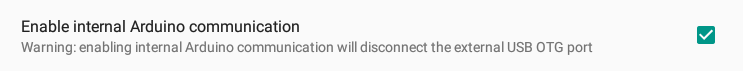

UDOO Quad/Dual Documentation
UDOO Quad/Dual Documentation
UDOO Android Settings
Overview
Since the 6.0 Marshmallow version, the UDOO Android distro comes with a custom UDOO section in Setting App to configure custom options for UDOO boards.
In General you can find misc custom options to set video output, audio device, processor's governor, OTG communication and reboot Android in recovery.
Select Video Output
In UDOO QUAD/DUAL you have three options as video output.
The default one at boot is HDMI.
Enable internal Arduino Communication (ADK)
The i.MX6 USB OTG bus can be physically connected to:
- The external micro USB connector (CN3) to communicate through adb with an External PC exactly like you do with an Android smartphone/tablet.
- The UDOO's Arduino™ DUE processor USB Native port to make communicate an Android App and an Arduino sketch through
ADKprotocol.
Visit the External OTG connection to i.MX6 and OTG connection between i.MX6 and SAM3X sections in the page i.MX6 and Sam3X Communication to find more info about.
Since the 6.0 Marshmallow version the default option let UDOO's OTG bus communicate with and external PC (ADB). Check this option to make an Adroid App communicate with the UDOO's Arduino™ DUE processor.
Visit the Switch Between Adb Debug and ADK Connection to find more info about how to change the iMX^ USB OTG physically connection.
Select the Processor's Governor
You can select a CPU governor among one of:
-
conservative: Dynamically switch between CPU(s) available if at 75% load. -
ondemand: Dynamically switch between CPU(s) available if at 95% cpu load. -
userspace: Run the cpu at user specified frequencies. -
powersave: Run the cpu at the minimum frequency. -
interactive: dynamically scales CPU clockspeed in response to the workload placed on the CPU by the user. Significantly more responsive than ondemand. -
performance: Run the cpu at max frequency.
Select Audio device
You can select the Output Audio Device among one of:
- HDMI (imx-hdmi-soc) : audio from the HDMI monitor
- OnBoard (vt1613-audio) : audio from the green speaker 3.5mm jack.
You need to reboot Android to apply this change.
Reboot in TWRP recovery
Since Android 6.0 Marshmallow version the UDOO Android distro provides TWRP recovery.
Booting Android in Recovery mode allow you to install zip update packages. For example you can install the Open GApps packages to Google Play Services, Play Store and Google Apps.
You can find an exhaustive guide of how to install Gapps here.
Another way to boot the Android Distro in Recovery Mode is run the following command in the U-Boot console through the Serial Connection:
run recovery cmd
Alternatively you can use adb tools in Adb Debug mode from you external PC using the command:
adb reboot recovery
Expand /data partition to fit the micro SD card
Since Android 6.0.1 R2 you can expand the /data partition to fit the maximum space available on the microSD card. The UDOO Android image can be flashed on a Micro SD of at least 4 GB. The image is not expanded automatically and stuck at 4GB even if you use a bigger SD card; however you can expand your /data partition manually using this menu option.